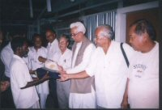

|
Join Mukto-Mona's
Sidr Cyclone Rehabilitation Project 2007 in Bangladesh!

A woman who lost her home in Barisal
weeps amid the devastation of the cyclone.
(Picture source: cnn.com)
Dear Friends &
Well-wishers,
Most of you probably are already aware of the massive havoc and devastation
that has been caused by the ferocious cyclone Sidr, "the most destructive
storm to hit the country in more than a decade," in Bangladesh. As per
the
latest ABC report,
the cyclone has left up to 10,000 dead and "millions homeless and hungry." Available relief operation in the affected area
is barely sufficient because of the intensity and immensity of the damage.
For these practical reasons, government also cannot be expected to carry out
the huge relief operation and rehabilitation work all alone.
|
Horrifying Experience:
A visit to coastal areas in Khepupara-Kolapara Upazila by Ajoy
Roy

I
had been to southern part of, mainly the coastal areas recently in
Kolapara-Khepupara Upazila of district of Patuakhali, one of the most
devastated districts. The coastal belt we visited stretched from Kuakata in
the west to east along the sea cost for a few miles. We saw the devastated
jnapads (roads) and janas (people). The condition of the
people is simply beyond description .....
(Read
Prof. Roy's report clicking
here). |
That said, we would like to
request our beloved members to come forward and give a hand to the millions
of poor victims. There are several government and NGOs available, where you
may wish to donate. Two such places for donation are-
1.
Consulate General of Bangladesh in New York
(Note: Online donation option available)
2. International Federation of Red Cross and
Red Crescent Societies
(Note: Online donation option available)
3.
Chief Adviser’s
Relief and Welfare Fund, Govt. of Bangladesh
(Note: Online donation
option NOT yet available)
In order to be a part of this humanitarian mission, Mukto-Mona has
so far raised US $ 2215.00. This includes $500.00 from M-M's own modest fund
plus donations from following benevolent members & well-wishers of M-M.
|
Contributor
|
Amount in US $
|
|
Tausif Hassan (NY)
Prof. Fazle Hussain (TX)
Mohd. Asghar (CA)
Lutfur Rahman (Canada)
Irtishad Ahmad (FL)
Pradipto Bagchi & Jaya
Pal (NJ)
Jahed Ahmed (NY)
Dr. Ali Riaz (IL)
Quazi Azizul Haque (DE)
Dr. Khurshed Chowdhury
(MD)
Mr. Shafiq (NY)
Jaffor Ullah
Luis Biancardi (FL)
Christine and Milton
Robinson(FL)
Farid Ahmed(FL)
Avijit Roy (ATL)
Bonna Ahmed (ATL)
Snigdha Ali (VR)
Farzana Ashraf and Umer
Faruq (MN)
|
|
Total amount of donation
raised as of 12.29.07
|
US $ 2215.00
|
|
|
We are planning to rebuild a school in one of the
cyclone-devastated areas. In this context, readers may have a look at our
earlier
Flood
Rehabilitation Project undertaken in 2004. The project was
supervised by our Dhaka representative, noted scientist & human rights
activist, Prof. Ajoy Roy (Read Prof
Ajoy Roy's latest report here). Interested members are requested to contact the
following individuals to participate in Mukto-Mona Cyclone Rehabilitation
Project 2007:
Farid Ahmed
farid300@gmail.com (Florida, USA)
Jahed Ahmed
worldcitizen73@yahoo.com (NY, USA)
Avijit Roy
charbak_bd@yahoo.com (ALT, USA).
Tanbira Talukder
tanbira.talukder@gmail.com (Netherlands)
Prof. Ajoy Roy
avijit@citechco.net (Dhaka,
Bangladesh)
Sincerely,
Moderation Team
&
Mukto-Mona Editorial & Advisory Board
www.mukto-mona.com
P.S. Some news coverage
and article of the cyclone SIDR:
1. Ajoy Roy's visit to coastal areas in Khepupara-Kolapara Upazila (MM
Project).
2. To watch some pictures
of the cyclone devastated area, click
HERE.
3. UNICEF
coverage
4. Economic
Cost of "Sidr".
[Last updated on December 29, 2007]
|